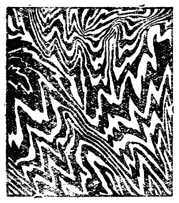
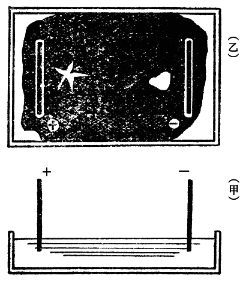
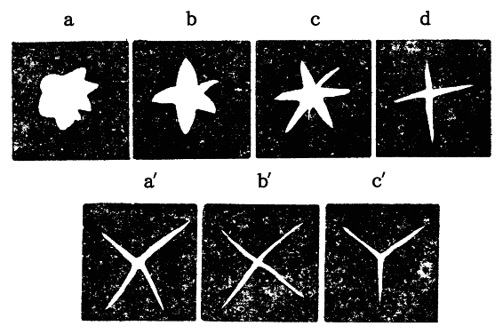
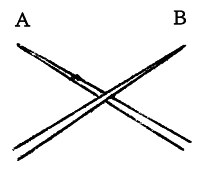
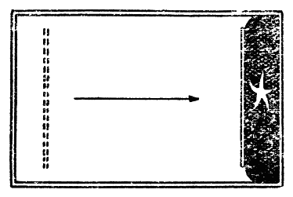
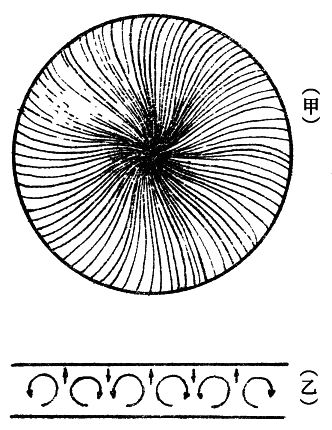

寺田寅彦先生は晩年理化学研究所で、墨流しの研究に着手された。その研究の進行につれて、東洋に於て古代から使われている墨は、膠質学（１）上より見ても、非常に複雑で興味深い問題であることが分かり、この研究は「墨汁の膠質的研究」となって、先生の逝去の直前まで数年間続けられていた。その結果の前半は、既に理研欧文報告第二十三巻及び二十七巻にそれぞれ、
Experimental studies on Colloid nature of Chinese black ink. Part
 and
and  .
.として発表され、またその続きは帝国学士院記事第十一巻に、
Cataphoresis of Chinese ink in water containing deuterium oxide.
として発表されている。学士院の方は重水（２）で墨を磨った時の性質を調べられたものである。その後の研究は、講演会で発表されただけで、材料は揃っているが、論文としてまとめられてはいない。この小論では、以上三つの既刊の論文の中から、墨流しに関係する部分を紹介することにする。
墨は周知の如く、支那から輸入されたもので、我が国に入ったのは、日本書紀によると、推古天皇の時代である。その後我が国に於ても墨が製造され始め、
普通の炭素粒は水に混じても膠質液とならず、従って暫く置けば、炭素粒だけ下に沈澱してしまう。ところが少量の膠が入ると膠質液となるのは、この際膠が極めて薄い膜となって、炭素粒子をつつんでいる為と思われる。このようなものを保護膠質というのである。膠は炭素に対して強い吸着力を有しているもので、硝子板に煤の粉を盛り上げ、その片隅に膠液を一滴落としてやると、煤の粉の山は見る見る膠滴の中に吸い込まれて、一様な溶液となってしまうことからも、この強さが分かる。水滴では全くこのような現象は起こらない。
炭素粒の懸浮液（４）を作る方法は、欧洲の学者によって十分研究され、色々の方法が知られている。スプリング氏は、炭素粒に附着しているごく微量の油脂類、例えば手から出る脂のようなものを完全に取り去れば、即ち極端に清浄にした炭素粒ならば、水中に懸浮状態となって止まるということを発見した。しかしこの完全に綺麗にするということは、研究室内でもなかなか容易に出来ることではないのである。その他ナトリウムの特殊の化合物を用いる方法などもあるが、東洋の墨のように膠を用いるというやり方は、未だ研究が出来ていないのである。従ってこの研究は、墨を書画用に使用する以外に、純物理学的方面にも、炭素の膠質液という重大な研究題目として、早く我が国人の手で完成すべき仕事なのである。
墨流しは古来我が国で行われた遊戯であるが、染め物にも応用されている。これを行うには、まず広い器に水を満たし、その水面に墨汁の少量を流して墨の薄膜を作る。そして針状の尖ったものの先に、石鹸脂類などをちょっとつけて、それで墨膜上の一点にちょっと触れるのである。例えば細い硝子棒の尖端でちょっと鼻のあたりを撫でて、それでそっと墨膜をつつけばよい。するとその点を中心にして、墨膜に円い孔が出来、そこだけ水面が白い顔を出す。孔の直径は脂類の量によって決まり、多いほど大きくなる。墨膜上にそのような孔を沢山作っておいて、水を徐々に動かすと、墨膜は色々複雑な形となる。その時紙をそっと水面にあてて、この墨膜を紙につけてとるのが、いわゆる墨流しである。模様の型には大体一定の特徴があって、その一例は第一図に示す如くである。

第一図
この墨流しに似たものは欧洲にもあって、彼の地の製本屋が、この方法を実用化している由である。それは粘土を亜麻仁油にとかしてその液面に印刷しようと思う絵の具を、牛の胆汁あるいはその他の特殊油に混じて流すのである。この絵の具の薄膜に孔を作るのは、墨流しと全く同じ方法によるのであるが、粘土の種類によって孔の形がいろいろ変わり、星状の孔が出来たりするのであって、この絵の具膜を紙か布かにつけてとると、面白い模様が出来るのである。墨の場合にも、条件によってはこの星状の模様などが出来ることが、この研究で分かった。
まず最初に墨の粒子の大きさを測ってある。用いた墨は奈良古梅園の紅花墨で、市販の品である。あらかじめ墨の目方を精密に測っておいて、それを磨って墨汁が適当な濃さになった時、その墨をよく拭いて、また目方を測り、前後の差から、水に溶け込んだ墨の量をきめる。この時硯の中にあった水の量を測っておくと、墨汁の濃度を定量的に決めることが出来る。
このようにして濃度の分かった墨汁をつくり、その液の微量を、格外顕微鏡（５）で調べて、一定容積中の墨の粒子の数を算えるのである。前に濃度が定量的に分かっているのであるから、墨の比重からこの一定容積中の墨の実質の体積が計算される。それで墨の粒子を皆一様な大きさの球と仮定すると、体積と粒子の数とから、一つの粒子の大きさが計算出来るのである。
この実験の一例では、一立方
もっとも格外顕微鏡で見ていると、粒子には大小いろいろあって、小さいものは水の分子との衝突によって、所謂ブラウン運動という運動をして、びくびく動くのであるが、大きいものはじっと静止して見える。それで大体墨の粒子は直径千分の一
墨膜の厚さを測るには、一定量の墨汁を水面に落とし、それが拡がる面積を測ればよい。もっとも墨汁中の水は下の水と一緒になってしまうので、墨の実質の膜の厚さを測るのであるから、濃度の分かった墨汁を用いる必要がある。
この実験では、前述のようにして、0.25
前述の濃度から計算して、硝子棒の頭についた墨汁の微滴内にある墨の実質は1.92×10−4
墨の中に含まれている膠の量は約その中の六分の一くらいであるとすると、この場合の膠の量は4.5×10−8
以上の結果を譬えて言えば、水面に出来る墨膜の構造は、大形の林檎くらいの大きさの煤の粒子が、窓硝子くらいの厚さの膠質に包まれていて、それが二尺くらいの間隔を置いて一面に並び、その間に小さい炭素分子と膠分子とが薄い膜をなして詰まっているようなものと見て差し支えないのである。但し林檎の直径は約一万分の一
陶器皿に水を入れ、その水面に墨の膜を作っておいて、その中へ第二図甲に示すように、二枚の銅の極板を挿入し、これに百ボルトの電圧を加えた。すると陽極（＋）の方に近い墨膜の部分が固形化することが分かった。陰極（−）に近い部分には、そのような傾向は認められなかった。

第二図
墨膜が固化したことは、脂のついた針で孔を作ってみると、星状に割れることから知ることが出来た。第二図乙に示すように、陽極に近い部分には星状の割れ目が出来るのに、陰極に近い部分では円い孔になるということは、墨膜の表面張力が脂の膜の表面張力より大きい為に、中心部の脂が円形に拡がることを示している。従って墨膜はまだ液状を保っていることが分かる。この墨膜の固形化は、陽極に近い部分から始まり、漸次拡がって行って、一、二時間経つと墨膜全体が固形化してしまうことが分かった。それを見るには、電圧を加えてから色々な時間経過した後に、各点で割れ目を作って見れば良いのである。
ところが電極の銅板を白金板に変えて、同じ実験をくり返して見ると、このような墨膜の固化は起こらないのである。それでこの現象は電気分解によって、銅のイオン（７）が水中に溶け出し、それがコロイド粒子の凝集（８）を起こしたものとして説明出来るのである。
それで初めから水の中に銅の化合物を溶かしておいて、その上で墨膜を作って見たら、電圧を加えなくても固化が起こったのである。即ち硫酸銅の溶液の上に墨膜を作ったのであるが、その時は膜は

第三図
この現象の発見によって、溶液中のイオンが墨膜の性質に著しい影響があることが分かった。それで更に色々な化合物の溶液について、濃度を色々かえて実験をして見た。その結果、墨膜の固形化は漸次に進行するもので、その速度は化合物の種類によって異なるが、同じ化合物については、濃度が大きいほど速いということが分かった。第三図は塩化銅の１／40［＃「１／40」は分数］モル溶液（９）（稀薄溶液）上に作った薄膜で、ａｂｃｄの順に、それぞれ膜を作ってから、五秒、十秒、二十秒、四十秒経過後に作った割れ目の状況を示す。時間の経過につれて、孔が円形から星状に移って行く状態、即ち膜の固化して行く様子が見られるのである。同図ａ′ｂ′ｃ′は、濃度を前の十倍、即ち
 モルにした場合に、それぞれ前の場合に対応する時間後に於ける割れ目の状況を示したものである。濃度が大きくなると、固化が早く起こることが良く見られるであろう。同様の実験は、塩化鉄や塩化アルミニウムの溶液についても繰り返して行われ、同様の結果が得られたのである。墨膜が十分固化してから、沢山の割れ目を作ると、割れ目が互いに交錯して、結局墨膜は沢山の多角形片に分かれてしまう。そして水を動かすと、これらの薄片は水面を流れ動くのである。この膜の薄片は分子数層くらいの厚さで、今までに知られた固体の薄片としては、恐らく一番薄いものであろう。
モルにした場合に、それぞれ前の場合に対応する時間後に於ける割れ目の状況を示したものである。濃度が大きくなると、固化が早く起こることが良く見られるであろう。同様の実験は、塩化鉄や塩化アルミニウムの溶液についても繰り返して行われ、同様の結果が得られたのである。墨膜が十分固化してから、沢山の割れ目を作ると、割れ目が互いに交錯して、結局墨膜は沢山の多角形片に分かれてしまう。そして水を動かすと、これらの薄片は水面を流れ動くのである。この膜の薄片は分子数層くらいの厚さで、今までに知られた固体の薄片としては、恐らく一番薄いものであろう。
第四図
次に固化した墨膜に一つの割れ目を作っておいて、暫くして第二の割れ目をこれと交錯するように作ってやると、第四図のように完全に切れ合うことが知られた。同図に於て、Ａが初めに作った割れ目で、Ｂが後に作ったものである。交錯の工合をよく見ると、ＢはＡの空所を真っ直ぐに通過しているので、これから見て次のようなことが分かる。墨膜が固化した場合、全体に歪みがはいって割れ易い状態にある。脂のついた針の先端で一部を破ると割れ目が入り、そこへ下の水面が顔を出す。すると脂はその水面に沿って、眼に見えぬ薄膜となって割れ目の間隙を満たす。脂類が水の自由表面に分子一重の薄層となって拡がることは、前述の如く、よく研究されていることである。この眼に見えぬ脂の薄層もまた暫くすると固化してしまうので、第二の割れ目はその所を直線的に交錯して出来るのである。この眼に見えぬ脂の薄膜は固化はしても、墨膜の固化したものよりも脆い［＃「脆い」は底本では「跪い」］ことが分かった。
墨膜は横から圧縮することによってもまた固化することが次に知られた。長方形の皿に水道の水を一杯入れ、その上に墨膜を作る。そして綺麗に洗った硝子板を水中に立てて、第五図に示すように、皿の縦の方向に静かに動かして、墨膜を横から圧縮する。硝子板を進めて、墨膜が初めの面積の１／10［＃「１／10」は分数］くらいまで圧縮すると、星状の割れ目が出来、膜が固化したことを示す。その時硝子板を戻すと、墨膜はそれにつれて拡がって来る。そして脂のついた針で触れると、今度は円形の孔が出来る。即ち圧縮によって固化した墨膜は、旧の形に膨脹させることによって、再び液状の膜に返ることが分かった。この固化と液化とは何度もくり返して生ぜしめることが出来た。これは非常に面白い現象である。

第五図
ところで水道の水の代わりに、蒸溜水を使ってこの実験をしてみると、いくら圧縮しても墨は固化しないのであった。即ち水道の水の中にある微量の不純物が、圧縮の際の固化に効くということが分かった。それで蒸溜水の中にごく微量の電解質を入れて実験をして見た。まず塩化ニッケルの非常に薄い溶液（0.014モル液）を用いて見た。この程度の稀薄溶液では、墨膜はそのままでは数時間は固化しないのである。ところがちょっと圧縮すると、即ち大体旧の一割程度も圧縮すると、直ぐ固化することを知った。更に塩化アルミニウムの溶液では、百分の一モル程度の極端に稀薄な溶液でも、一割程度の圧縮によって固化が起きることが分かった。百万分の一モル程度のごく微量の不純物が有効に作用するということは驚くべきことで、膜の性質が水の成分によって如何に著しい変化を受けるかという一つの例である。これらの場合も圧縮膨脹によって、固化と液化とが交互に起きることも確かめられた。
淡墨で描いた上に暫く経って濃い墨を塗る時、二度目の墨はぼけるのであるが、そのぼけ方は場合によって少しちがう。それに関聯した実験もされている。水面に一様な墨膜を作っておいて、直ぐ引き続いてその中心に第二の墨滴を加えてやると、前の墨膜上に一様に拡がって、両者の区別はつかなくなる。ところが数分経ってから第二の墨滴を落とすと、拡がり方が遅く、前の墨膜の途中まで行ったところで止まってしまう。そして両者の境界が判然とつくのである。即ち墨を重ねる場合には、前の墨は単に乾くということ以外に、墨の実質も変化していて、後の墨との間の融合の度合いに影響するということが分かったのである。
以上の実験では、硝子棒の尖端に脂を微量につけて、それで墨膜に孔を作ったのである。この場合硝子棒の代わりに、木材の細い棒、例えば
第六図
流した墨汁の量が多い時には、墨膜はかなりの厚さになる。その時には暫く放置すると、第七図甲のように、中心から細い放射状の線が出来ることが多い。これは薄い液層内に対流によって出来る細胞渦の為である。細胞渦というのは、一様な液層が非常に細かい沢山の渦に分かれる現象を云うのであって、渦は横から拡大して見ると、第七図乙のような構造になっている場合が多い。この渦は液層がやや厚くて、上面が冷え下面が暖かい時に起こり易い。普通液膜を空中に放置すると、表面は蒸発の為に熱を奪われて冷えるので大概の場合薄い液層が乾く時にはこの現象が起きる。紙や布に墨汁を十分たっぷり載せて描いた場合、乾いた時に妙な縞模様が出来るのも、この細胞渦によるのである。

第七図
水中に電解質が少量あると、墨膜は細胞渦によって放射状の縞になると同時に、膜が固化して行くので、縞は第七図のように規則正しくならず、色々複雑な形をとるようになる。実際墨を用いて画を描く時には、これらの色々な現象が集積して、種々の面白い効果を出すことがあるであろう。
註
（１）膠質学。膠質はコロイドの訳で、コロイド粒子というのは分子が数百ないし数千くらいあるいはそれ以上集まった微粒子で、極く大倍率の顕微鏡でも見えないくらいの小さい粒子である。膠を水に溶かした時は、膠の実質は水の中にコロイド溶液として存在する。これに対して砂糖や塩の水溶液は分子溶液と称すべきものである。墨汁はこの膠質溶液である。膠質溶液は非常に沢山あり、この方面の学問は近年長足の進歩を遂げ膠質学という部門となっている。
（２）重水。普通の水は普通の水素原子二つと酸素原子一つとから出来ているが、このほかに普通の水素原子の二倍重い特殊の水素原子があって、それと酸素原子とから成る水が存在することが近年分かった。その水を重水という。われわれが日常用いる水にも、重水がごく微量含まれている。
（３）電解質。普通の意味で水に溶ける物質即ち塩とか色々の化学薬品のようなものを云う。これらの溶解物質は、水に溶けた場合、帯電原子あるいは原子の集まりとなる。即ちイオンに分解するので、これらの溶液は良く電気を伝導する。
（４）懸浮液。粒子が沈澱せず、懸浮 の状態でいる液。膠質液も懸浮液の一つである。この時の粒子を懸浮状態にあると云う。
（５）格外顕微鏡。普通の顕微鏡ではいくら高倍率にしても見えないくらいの微粒子を見る特殊の顕微鏡。視野を真っ暗にしておいて、横から強い光線で照らすと、粒子が闇夜の星のように光って見えるのである。ちょうど塵自身は眼に見えないくらい小さいにも拘らず、暗い室内に日光が漏れ入る場合には、その光線の中にある微塵が光って見えるのと同じ原理である。従ってこの顕微鏡では微粒子の形は見ることが出来ないので、唯光点の数から、存在する微粒子の数だけが測れるのである。
（６）1.6×10−5というのは0.000016のこと、15×109は15000000000のことである。肩についている小数字の数だけ０がつく。この小数字が負の時は小数点下になる。
（７）イオン。化合物の分子は水中に溶けると、構成要素たる原子または原子の集合に分離し、この際分離したものは正負の電気を帯びる。これをイオンといい、金属の方が正、他が負に帯電する。例えば塩はナトリウムと塩素との化合物であるが、水に溶けると、正のナトリウムイオンと負の塩素イオンとに分離する。
（８）凝集。金属イオンが存在すると、コロイド粒子は多数集合して一塊になる。この現象を凝集と云う。例えば墨汁に塩類を少し入れると、墨が沈澱して上澄みが出来るのは、イオンの為に墨の粒子が凝集を起こして沈澱するのである。
（９）一モル溶液。溶かすべき物質の分子量の数だけの瓦 数を一立 の水に溶かしたもの。これは溶解物質の分子数の濃度を示すことになり、便利な為に多くの場合モル濃度を用いる。
（１）膠質学。膠質はコロイドの訳で、コロイド粒子というのは分子が数百ないし数千くらいあるいはそれ以上集まった微粒子で、極く大倍率の顕微鏡でも見えないくらいの小さい粒子である。膠を水に溶かした時は、膠の実質は水の中にコロイド溶液として存在する。これに対して砂糖や塩の水溶液は分子溶液と称すべきものである。墨汁はこの膠質溶液である。膠質溶液は非常に沢山あり、この方面の学問は近年長足の進歩を遂げ膠質学という部門となっている。
（２）重水。普通の水は普通の水素原子二つと酸素原子一つとから出来ているが、このほかに普通の水素原子の二倍重い特殊の水素原子があって、それと酸素原子とから成る水が存在することが近年分かった。その水を重水という。われわれが日常用いる水にも、重水がごく微量含まれている。
（３）電解質。普通の意味で水に溶ける物質即ち塩とか色々の化学薬品のようなものを云う。これらの溶解物質は、水に溶けた場合、帯電原子あるいは原子の集まりとなる。即ちイオンに分解するので、これらの溶液は良く電気を伝導する。
（４）懸浮液。粒子が沈澱せず、
（５）格外顕微鏡。普通の顕微鏡ではいくら高倍率にしても見えないくらいの微粒子を見る特殊の顕微鏡。視野を真っ暗にしておいて、横から強い光線で照らすと、粒子が闇夜の星のように光って見えるのである。ちょうど塵自身は眼に見えないくらい小さいにも拘らず、暗い室内に日光が漏れ入る場合には、その光線の中にある微塵が光って見えるのと同じ原理である。従ってこの顕微鏡では微粒子の形は見ることが出来ないので、唯光点の数から、存在する微粒子の数だけが測れるのである。
（６）1.6×10−5というのは0.000016のこと、15×109は15000000000のことである。肩についている小数字の数だけ０がつく。この小数字が負の時は小数点下になる。
（７）イオン。化合物の分子は水中に溶けると、構成要素たる原子または原子の集合に分離し、この際分離したものは正負の電気を帯びる。これをイオンといい、金属の方が正、他が負に帯電する。例えば塩はナトリウムと塩素との化合物であるが、水に溶けると、正のナトリウムイオンと負の塩素イオンとに分離する。
（８）凝集。金属イオンが存在すると、コロイド粒子は多数集合して一塊になる。この現象を凝集と云う。例えば墨汁に塩類を少し入れると、墨が沈澱して上澄みが出来るのは、イオンの為に墨の粒子が凝集を起こして沈澱するのである。
（９）一モル溶液。溶かすべき物質の分子量の数だけの
（昭和十二年十月）